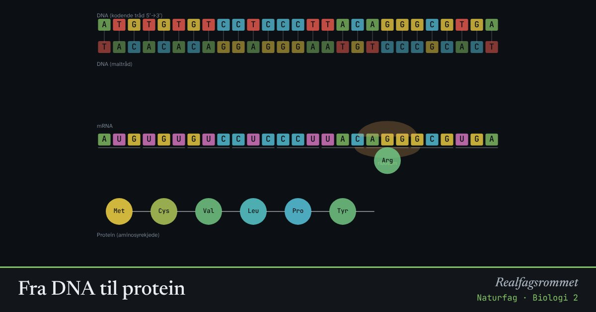

Fra DNA til protein
Et gen er en oppskrift. Først kopieres DNA til mRNA (transkripsjon). Så leser ribosomet mRNA tre baser om gangen og setter sammen aminosyrer til et protein (translasjon).
Start animasjonen
Formler
Om animasjonen
DNA har fire baser: A, T, G og C. A passer med T og G passer med C. I RNA er T byttet ut med U.
Tre baser i mRNA kalles et kodon. Hvert kodon står for én aminosyre eller for stopp. Startkodonet AUG gir alltid metionin (Met).
En mutasjon endrer en base. Den kan være stille (samme aminosyre), endre aminosyren, eller gi et stoppkodon slik at proteinet blir for kort.
Prøv dette
- Lag mutasjoner til du finner en stille mutasjon. Hvorfor kan en mutasjon være stille?
- Hvilket mRNA-kodon gir aminosyren tryptofan (Trp)? Bruk kodontabellen i læreboka.
- Hva skjer med proteinet hvis en mutasjon lager et stoppkodon tidlig i genet?
- Hvordan kan gensaksa CRISPR brukes til å reparere en mutasjon?
Kompetansemål
- Naturfag: DNA, arv og evolusjon
- Kjemi 2: Biologiske makromolekyler
- Biologi 2: Genetisk kode og regulering av genuttrykk